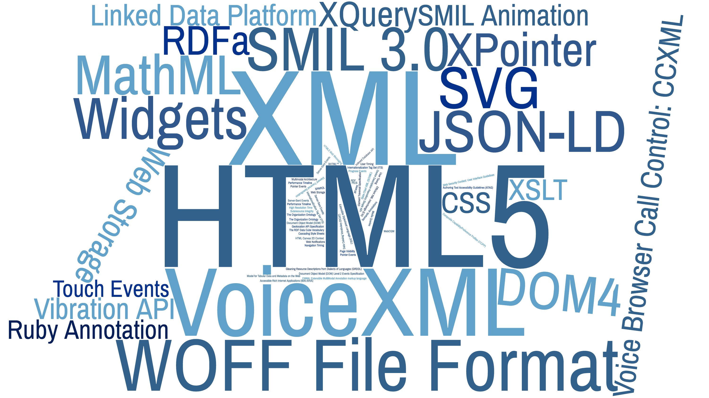

{kind=link}

Octubre 2016
Con el objetivo de llevar a la Web a su máximo potencial.
Estándares
+260 Especificaciones, directrices y herramientas para la Web:
Estándares abiertos con la política de patentes más transparente en Internet

+400 organizaciones tecnológicas (públicas, privadas, academia) forman parte del W3C. Todos los sectores están representados.
Cada organización Miembro tiene un representante en el Comité Asesor
Distintos tipos de grupos que realizan el trabajo técnico
Buscan los requisitos y casos de usos de mercados concretos para posible estandarización de tecnología
Perfil del participante: tecnólogo con conocimiento del negocio de la empresa
Desarrollan estándares técnicos (especificaciones)
Perfil del participante: ingeniero/experto en el área
Grupo de +140 participantes que recogen requisitos y casos de uso: flujo estándar de pagos en la Web, métodos de pago, seguridad, APIs…
Miembros W3C en este grupo:
Alibaba, Apple, AT&T, Blockstream, Bloomberg, C-DAC, Camara Interbancaria de Pagamentos, Canadian Payments Association, CANTON, China Mobile Communications, De Nederlandsche Bank, Deque
Systems, Deutsche Telekom AG, Digital Bazaar, Electronic Transactions Association, ETRI, Federal Reserve Bank of Minneapolis, Financial Services Technology Consortium, Fundacion CTIC, Gemalto, Google, GRIN Technologies, GROUPE BPCE, GS1, Huawei,
IBM, INRIA, Inswave Systems, ISO 20022 Registration Authority, Kaiser Permanente, Knowbility, Lyra Network, Merchant Advisory Group, Microsoft, Mozilla, NACS, Nbreds, NIC.br, Opera Software, Oracle Corporation, Orange, PayGate, Rabobank Nederland,
Rakuten, Ripple, SHIFTMobility, Shimply, Shopify, SK Telecom, Spec-Ops, Standard Treasury, Target, Tencent, Thomson Reuters, UNI K.K., Verisign, Viacom, Visa Europe, Worldpay, Yandex
+100 participantes que recopilan requisitos y casos de uso sobre publicación digital (anotación, formato EPUB-WEB, metadatos,…)
Miembros W3C en este grupo:
Adobe Systems, Apple, Benetech, Beyond Perspective Solutions ltd, Bluefire Productions, Book Industry Study Group, C-DAC, Copyright Clearance Center, Cornac Servicios Editoriales, DAISY Consortium,
Defense Information Systems Agency (DISA), Department of Informatics, PUC-Rio, Department of Information Technology, Government of India, EDRLab, Educational Testing Service, Ephox Corporation, Google, Hachette Livre, Hal Leonard / Noteflight,
Igalia, iMinds, INNOVIMAX, International Digital Publishing Forum (IDPF), MIND Center for Interdisciplinary Informatics, MITRE Corporation, Monotype Imaging, Pearson plc, Spec-Ops, Stanford University, The Rebus Foundation, University of Illinois
at Urbana-Champaign, Viacom, Vivliostyle Inc., Web3D Consortium, Wiley
+160 participantes que desarrollan los estándares para entretenimiento (segunda pantalla, interacción multimodal, API control remoto…)
Miembros W3C en esta actividad:
Aalto University, Shinji Hoshino, ACCESS, ActiveVideo Networks, Adobe, Akamai, AT&T, BBC, C-DAC, Cable Television Labs, China Mobile Communications, Comcast, CWI, Government of India,
Deque Systems, Deutsche Telekom AG, Dolby Labs, Electronic Frontier Foundation, ETRI, ERICSSON, Espial Group, EBU-UER, Fraunhofer Gesellschaft, Google, Home Box Office, HTML5 Converged Technology Forum, Igalia, iMinds, INNOVIMAX, INSTITUT
TELECOM, Irdeto, JOANNEUM RESEARCH Forschungsgesellschaft, JW Player, KDDI, LG Electronics, Microsoft, Mitsubishi Electric, Motion Picture Association of America, MovieLabs, Mozilla, National Association of Broadcasters, National ICT Australia
(NICTA), Netflix, NHK, NTT, Nokia, Opera, Orange, Qualcomm, Samsung Electronics, SK Telecom, Skynav, Sony, Telecom Italia, Telefónica, Tencent, The Japan Commercial Broadcasters Association, Tomo-Digi, Toshiba, Viacom, Vimond Media Solutions,
WIZVERA
Cada Miembro puede asignar ilimitados participantes en cualquier grupo
* no existe compromiso, únicamente orientativo

| Tipo de org. en España (categoría HIC) | Cuota(€)* |
|---|---|
| Compañía con ingresos brutos anuales >= 800m€ | 68.000 |
| Compañía con ingresos brutos anuales 51m€ < 800m€ | 59.500 |
| Introductory Industry Membership (participación limitada a un IG) | 29.750 |
| Resto de las organizaciones, incl. organismos públicos y ONGs | 7.800 |
| Nuevas compañías y ONGs (<= 10 empleados e ingresos anuales < 2,25m€, dos primeros años) | 1.950 |
* Comenzando el 1 julio 2016. Ver más detalles y las cuotas oficiales actualizadas.
Martín Álvarez Espinar
Responsable Oficina W3C España